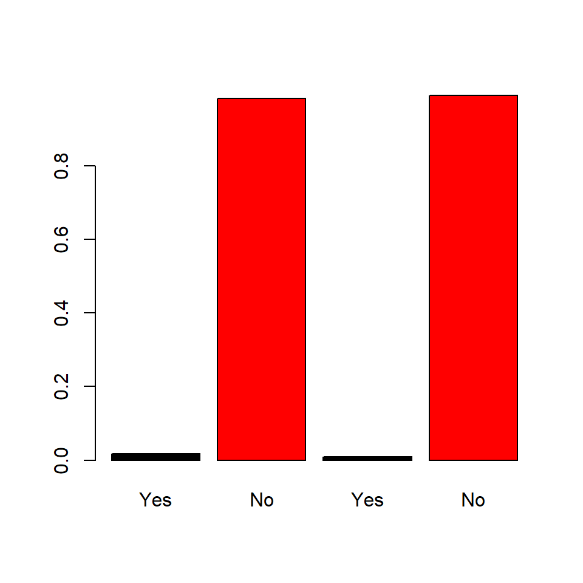

The eR-Biostat initiative : Using R markdown to develop E-learning capacity
Logistic regression modeling using R at the SUSAN-SSACAB 2019 Conference, Cape Town, South Africa
The GLM Course
An example from the GLM course
The Aspirin Use and Myocardial Infarction dataset includes the results of a study on the relationship between aspirin use and heart attacks by the Physicians’ Health Study Research Group at Harvard Medical School (Agresti 2012). The Physicians’ Health Study was a 5-year randomized study of whether regular aspirin intake reduces mortality from cardiovascular disease. Every other day, physicians participating in the study took either one aspirin tablet or a placebo. The study was blinded-those in the study did not know whether they were taking aspirin or a placebo. Of the 11034 physicians taking placebo, 189 suffered heart attacks, a proportion of \(189/11034=0.0171\). Of the 11037 taking aspirin, 104 had heart attacks, a proportion of \(0.0094\). The R code below is used to construct the data.
resp<-as.factor(c(rep(0,189),rep(1,10845),rep(0,104),rep(1 ,10933)))
trt<-as.factor(c(rep(1,189),rep(1,10845),rep(2,104),rep(2,10933)))
cbind(resp,trt)
Aspirin.1<-table(trt,resp)
Aspirin.1
row.names(Aspirin.1)=c("Placebo","Aspirin")A barplot of the data can be produced using the barplot() function
barplot(c(c(189,10845)/(189+10845),c(104,10933)/(104+10933))
,col=c(1,2,1,2)
,names=c("Yes","No","Yes","No"))
Model formulation
Let \(Y_{i}\) be the response variable, \[ Y_{i}=\left \{ \begin{array}{ll} 1, & \mbox{Myocardial Infarction}, \\ 0, & \mbox{Healty}. \end{array} \right . \]
Our main interest it to model the probability \[ P(Y_{i}=1)=\pi_{i}, \]
with linear predictor given by \(\beta_{0}+\beta_{1}\)Treatment\(_{i}\).
The parameter \(\beta_{1}\) is the log(odds ratio), that is \(OR=\exp(\beta_{1})\).
The model can be estimated in R using the glm() function for the analysis we use the zero/one version of the data which creates two vectors of the data, that is
resp<-as.factor(c(rep(1,189),rep(0,10845),rep(1,104),rep(0 ,10933)))
trt<-as.factor(c(rep(1,189),rep(1,10845),rep(2,104),rep(2,10933)))## resp
## trt 0 1
## 1 10845 189
## 2 10933 104Using the two vectors, resp and trt the model is fitted using the following code:
We model the probability of success P(Z=1). This is the probability to have cardiovascular disease. We want to see if Aspirin intake has an effect on the probability to have Myocardial infarction.
The output is given below.
##
## Call:
## glm(formula = resp ~ relevel(trt, 2), family = binomial(link = "logit"))
##
## Deviance Residuals:
## Min 1Q Median 3Q Max
## -3.0544 0.1376 0.1376 0.1859 0.1859
##
## Coefficients:
## Estimate Std. Error z value Pr(>|z|)
## (Intercept) 4.65515 0.09852 47.250 < 2e-16 ***
## relevel(trt, 2)1 -0.60544 0.12284 -4.929 8.28e-07 ***
## ---
## Signif. codes: 0 '***' 0.001 '**' 0.01 '*' 0.05 '.' 0.1 ' ' 1
##
## (Dispersion parameter for binomial family taken to be 1)
##
## Null deviance: 3114.7 on 22070 degrees of freedom
## Residual deviance: 3089.3 on 22069 degrees of freedom
## AIC: 3093.3
##
## Number of Fisher Scoring iterations: 7The parameter estimate for \(\beta_{1}\) is equal to 0.605
## (Intercept) relevel(trt, 2)1
## 4.6551501 -0.6054377and the odds ratio is equal to 1.83, indication that taking one Aspirin tablet per day reduce the risk for Myocardial Infarction.
## relevel(trt, 2)1
## 0.5458355Session information
## R version 3.6.1 (2019-07-05)
## Platform: x86_64-w64-mingw32/x64 (64-bit)
## Running under: Windows 10 x64 (build 17763)
##
## Matrix products: default
##
## locale:
## [1] LC_COLLATE=English_United Kingdom.1252 LC_CTYPE=English_United Kingdom.1252
## [3] LC_MONETARY=English_United Kingdom.1252 LC_NUMERIC=C
## [5] LC_TIME=English_United Kingdom.1252
##
## attached base packages:
## [1] stats graphics grDevices utils datasets methods base
##
## other attached packages:
## [1] bookdown_0.13 rmarkdown_1.15 knitr_1.24 BiocStyle_2.12.0
##
## loaded via a namespace (and not attached):
## [1] Rcpp_1.0.2 digest_0.6.20 later_0.8.0 mime_0.7 R6_2.4.0
## [6] xtable_1.8-4 magrittr_1.5 evaluate_0.14 rmdformats_0.3.6 highr_0.8
## [11] stringi_1.4.3 rstudioapi_0.10 promises_1.0.1 miniUI_0.1.1.1 tools_3.6.1
## [16] stringr_1.4.0 questionr_0.7.0 shiny_1.3.2 httpuv_1.5.1 xfun_0.9
## [21] yaml_2.2.0 compiler_3.6.1 BiocManager_1.30.4 htmltools_0.3.6References
Agresti, Alan. 2012. Categorical Data Analysis. WILEY.